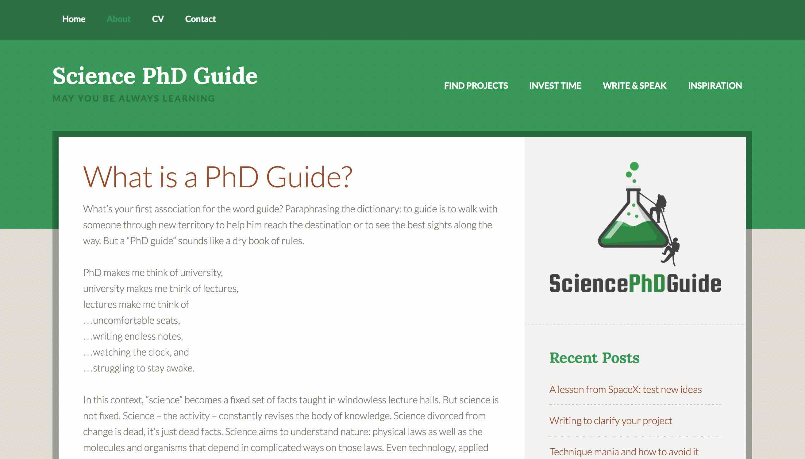

Home / Research / Catalogs / Curriculum Vitae / Publications / Blog
My blog has been down for awhile now. I experienced some problems with my website host and have been too busy with other projects to fix it. Meanwhile, feel free to check out my book which covers similar material for science PhD students.
I write a blog with research tips for science PhD students, sciencephdguide.com. On this site I describe some of the research skills that were most helpful during my own PhD. These are grouped into a few categories covering the usually untaught skills of finding good research topics, sharing your research results through writing and speaking. Other articles cover strategies for investing time rather than squandering it, reviews of books, or common PhD problems.
